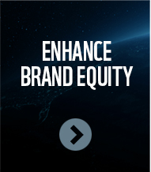

Enhancing brand equity
Sustained digtal marcoms are generally required to create favourable, stron and peharps unique associations about the brand.
This can be through the brand speaking for itself approach, entering through creating appealing messages or leveraging that is conecting itself with other brands, people, things and places.
This will result in increased brand equity leads to increase consumers brand loyalty. This can also influence customer demand at visual Point Of Purchase, as well as click through rate, online sales, and secures the continued demand as a result of brand equity and repurchase likehood.